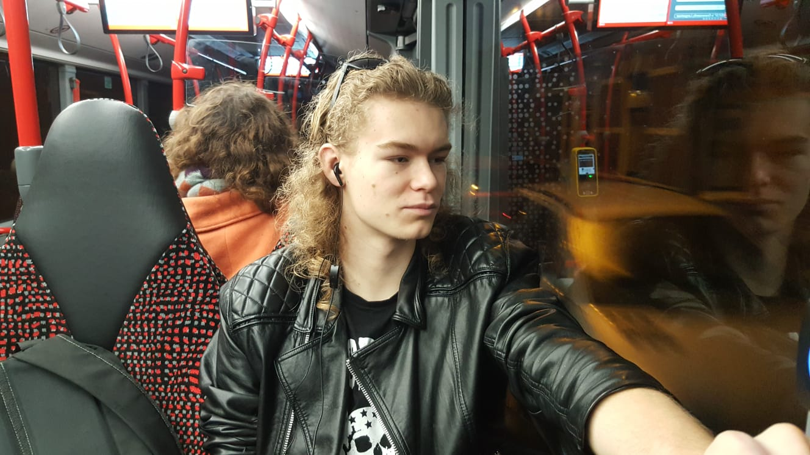

Bo-Eamonn de Snoo
Bo-Eamonn de Snoo, is een student aan het ROC Mondriaan | school voor ICT. Hier doet hij de opleiding Software Developer. Bo-Eamonn heeft deze opleiding gekozen omdat hij al jaren zichzelf fijn voelt bij het werken met computers op het gebied van programmeren. Bo-Eamonn kan het best op zichzelf werken maar in teamverband is ook geen probleem. Wanneer Bo op zichzelf aan het werk is, zit die helemaal in zijn eigen zone maar is wel aanspreekbaar. In het verleden moest Bo van zijn middelbare school stagelopen en heeft hierdoor ervaring opgedaan in verschillende sectoren. Hier heeft hij alleen maar profijt uitgehaald. In het privé woont Bo nog thuis. Hij heeft een hondje en een vriendin. Zonder zijn hondje of vriendin heeft hij heel eerlijk gezegd geen drijfveer.
